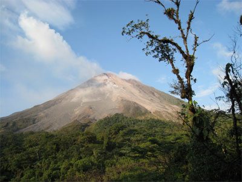

Коста-Рика. От Вулкана Аренал до Тихого Океана.
Маршрут разработан Ильей Коганом в 2010 году.

Коста Рика находится в тропической зоне, между 8 и 11 градусами северной широты, на перешейке, соединяющем Северную и Южную Америку. С востока она омывается Карибским морем, с запада – Тихим океаном. А сам перешеек находится на стыке тектонических плит, и является результатом их столкновения. Сейсмически это довольно активная зона; на территории Коста Рики есть около 60 вулканов, и мы поднимемся к кратерам двух из них.
Горы в Коста Рике поднимаются до высоты 3820 м (Серро Чиррипо). На Чиррипо мы в этот раз не полезем, но на высоте 3400 м побываем дважды, так что имеем все шансы увидеть разнообразие природных зон страны, от прибрежных джунглей и саванн до кофейных плантаций, «облачного леса» (cloud forest) и горных лугов и кустарников (paramo).
Но в саму шумную столицу мы не поедем. Наша цель – ее пригород с романтическим именем Алахуэла, находящийся в Центральной долине Коста Рики, на высоте 950 м над уровнем моря и в 5 км от аэропорта. Это милый городок с прямоугольной структурой улиц, обилием манговых деревьев, красивой центральной площадью, парком и собором. Если останутся силы, можно будет их посетить.

С утра наш путь лежит на север, среди плантаций, усадеб и небольших поселков. В середине пути мы сделаем остановку в придорожном кафе на берегу речки. Это место примечательно тем, что на ветвях прибрежных деревьев можно увидеть множество игуан. А в кафе можно заказать хороший костариканский кофе, или отведать местных соков. Кстати, большинство из них можно заказать с молоком (по существу, коктейли). Рекомедуем сок из гуанабаны с молоком; папайя и ананас тоже хороши.С другой стороны, окрестности Аренала – центр активного туризма в Коста Рике, и не только велосипедного. И мы воспользуемся этим на следующий день.
Сегодня мы поднимемся пешком на вершину «младшего брата» Аренала – потухшего вулкана Серро Чато. Высота вулкана – 1150 м, в самом кратере находится озеро с удивительной зеленой водой.
День 5 – среда. Эль Кастийо – озеро Аренал – Тиларан. 50 км/600м. Трансфер в Картахо (4 часа).
День 6 - четверг. Картахо – трансфер к
вулкану Иразу (40 минут) – Ороси. 57 км/ 575м
День 8 - суббота. Панамериканское
шоссе – Серро Муэрте – Сан-Рафаэль-дель-Норте. 81
км/ 1600 м
День 10 –
понедельник. Буэнос Айрес – Пальмар Норте -
Сиерпе. 78 км/ 450м
Через 23 км после старта мы выедем к реке Рио Хенераль и продолжим путь по ее долине. Долина сужается, дорога прижимается к реке и повторяет ее изгибы. Река принимает притоки, увеличивается. В нижнем течении она называется Рио Гранде. Она здесь уже действительно большая, и долина ее очень живописна. Мы спускаемся к тихоокеанскому побережью Коста Рики, и если вчера вы думали, что вам жарко, то сегодня будет еще жарче. В Пальмар Сюр мы увидим памятник доколумбовой эпохи – огромные каменные шары абсолютно правильной формы. Как их умудрились изготовить в те давние времена – загадка, и, конечно, одна из версий – внеземные пришельцы. Но поскольку пришельцев в последнее время никто не видел, то и мы их дожидаться не будем, а свернем на местную дорожку, которая, прорезая многокилометровые пальмовые плантации, выведет нас – под крики попугаев – в поселок Сиерпе, строящий на берегу одноименной реки. Широкая река Сиерпе медленно несет свои воды через непроходимые джунгли, и наш прибрежный отель кажется лишь маленьким островком цивилизации в этом мощном царстве дикой природы.
День 11 – вторник. Водное путешествие в Национальный парк Корковадо.
Вечером мы вернемся на лодке в Сиерпе, и на автобусе доедем до Увиты.
Дни 12-13 – среда-четверг. Увита.
Увита - небольшой приморский поселок, где мы отдохнем два дня после трудного похода. Здесь в океан вдается полуостров в виде китового хвоста, который защищает берег от сильного океанского прибоя, и поэтому тут можно хорошо поплавать. А можно погулять по пустынному пляжу. Он тянется на несколько километров в каждую сторону от «китового мыса». Широкая полоса песка, ограниченная с одной стороны океаном, с другой – пальмами. И никаких отелей на берегу, и очень мало людей, ибо это – часть Национального парка Марина Баллена.
День 14 – пятница – трансфер в аэропорт Хуан Сантамария и вылет домой.
Цену, что придется заплатить за приобщение к экзотике можно посмотреть на странице Календарь. Там же, можно оставить заявку на участие в походе.
В эту сумму входит:
1. Организация и проведение похода
2.
Поддержка
гида на активной части маршрута
3. Все ночлеги (отели 2* и пансионы)
4. Все завтраки (кроме дня прибытия)
5. Во все ходовые дни (10) – дневное питание (обычно
– обед-пикник)
6. Дни 2-10 – Машина сопровождения, перевозящая багаж и
помогающая уставшим
участникам.
8.
Указанные в
описании трансферы
9.
Водно-пешая
экскурсия в Национальный парк Корковадо.